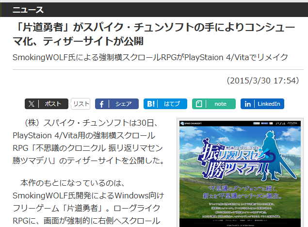
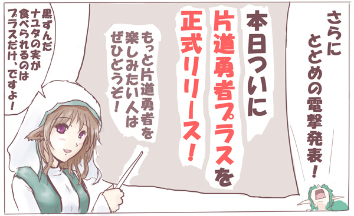

2015/4/1のニュース
【片道勇者、ついにコンシューマ進出！か？】

ということでウソみたいなホントの話ですが、 スパイク・チュンソフトさんから 「片道勇者」原案のコンシューマゲーム、 『不思議のクロニクル 振リ返リマセン勝ツマデハ』 が発表されました！ |
すでに「片道勇者」をご存じの方は、↓の記事が状況を把握しやすいと思います。
記事に取り上げてくださってありがとうございます！
【「片道勇者」がスパイク・チュンソフトの手によりコンシューマ化、ティザーサイトが公開】
http://www.forest.impress.co.jp/docs/news/20150330_695312.html
（ウェブアーカイブ/窓の杜 様より）

スパイク・チュンソフトさんによる公式サイトや映像はこちらから！
↓
＜不思議のクロニクル ～振リ返リマセン勝ツマデハ～ 公式サイト＞ http://www.spike-chunsoft.co.jp/furikatsu/ [ウェブアーカイブ / 新ウィンドウ] ＜不思議のクロニクル 振リ返リマセン勝ツマデハ ティザームービー＞ 『不思議のクロニクル 振リ返リマセン勝ツマデハ』は PS4、PS Vitaで2015年の夏発売予定とのことです。 中身については未知数なので今のところは何とも言えませんが、 スパイク・チュンソフトさんはローグライクゲームの開発においては 日本ではトップクラスに得意な企業さんだと思いますので、 プロの手によって片道勇者にどういう答え合わせがなされるのか 原案者として緊張しています。 「不思議のクロニクル 振リ返リマセン勝ツマデハ」は、 シナリオ・グラフィック・キャラクター・職業・アイテム・サウンドなどが スパイク・チュンソフトさんの手でおおよそ一新され、 新システムも搭載予定、とのことです。 私のやりたいことは全部 『片道勇者プラス』 として吐き出しましたので、 『不思議のダンジョン』シリーズを生み出してきた スパイク・チュンソフトさんの手を経て 『不思議のクロニクル』がどんなゲームに生まれ変わるのか、 1プレイヤーとしてとても楽しみです。 |
Ｑ．現在配布されている片道勇者はどうなるの？
Ａ. 『片道勇者』、『片道勇者プラス』に関しては、
『不思議のクロニクル 振リ返リマセン勝ツマデハ』と共存できるように
スパイク・チュンソフトさんが配慮してくださっているので、
フリーゲーム版片道勇者や片道勇者プラスへの影響はまったくございません。
これまで通り配布は続けられますので、ご安心ください！
そしてこの機会に宣言します！！

片道勇者の拡張版、『片道勇者プラス』が 本日2015年4月1日、ついに正式リリースです！ 詳しいゲーム内容については↓の公式サイトから！ 【片道勇者プラス 公式サイトへ】 『片道勇者プラス』はシェアウェア（有料）作品です。 |
『片道勇者プラス紹介動画』
（この映像は追加要素の紹介がメインです。無印の片道勇者を知りたい方は
まず (無印版)片道勇者 紹介動画[新ウィンドウ] をどうぞ！）
Q.ネムリは！？ プラス版だとネムリどうなるの！？
Ａ.達成するにはとても条件が厳しいものの、プラス版では
ネムリのエピローグが1つ追加されています。
内容は見てのお楽しみです。
Q.ん？ 紹介動画にどこかで見たキャラが……。
Ａ.彼は今も様々な世界を飛び回っています。
【おまけ】
＜自家製＞片道勇者TRPGリプレイのアレイラの中の人が
片道勇者TRPGキャラを題材にしたミニゲームを作っておられたのでここでご紹介！
妖精なのになんという技術力！ ありがとうございます！
ぷかぷかアレたん ～片道勇者TRPG（非公式）外伝～

ここまで読んでくださってありがとうございました！
それでは皆さま、楽しいエイプリルフールを！
※このページは2015年4月1日のエイプリルコンテンツでした。